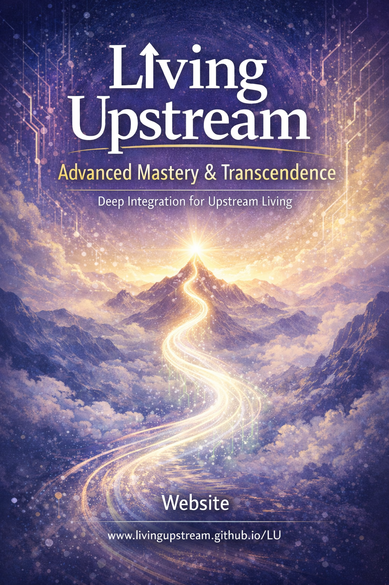

Thank you for continuing this journey through the trilogy. Your commitment to upstream living and mastery is an investment in clarity, energy, and flow across all areas of life.
Book 3: Advanced Mastery & Transcendence guides you into self-mastery, social architecture, energy sovereignty, emergent systems, leadership, and holistic integration. Here, you will apply, refine, and expand your upstream skills — transforming insight into sustainable, compounding momentum.
